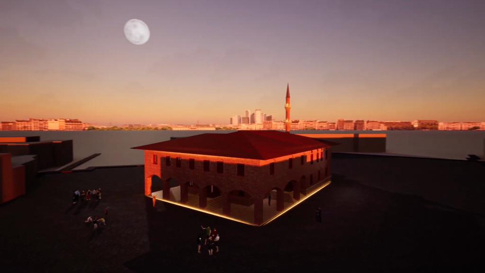

Hacı Bayram-ı Veli Camii Tanıtımı

Proje Hakkında
Bu çalışma, UNESCO Dünya Mirası Geçici Listesi'nde yer alan Hacı Bayram-ı Veli Camii için kapsamlı bir tanıtım materyali seti üretmeyi amaçlayan bir projedir. Tarihî ve kültürel değeri yüksek bu yapıyı, hem yerli hem de yabancı ziyaretçilere daha anlaşılır ve etkileyici bir şekilde sunmak için grafik tasarım, görsel iletişim ve mekânsal analiz yöntemleri kullanıldı.
Hacı Bayram Veli Camii, Osmanlı mimarisinin erken dönem özelliklerini yansıtan sade bir yapıya sahiptir.
Tasarım Süreci
Projenin Amacı:
Bu proje, kültürel mirasın modern tasarım diliyle yeniden yorumlanmasını hedefledi. Amaçlar:
• Yapının tarihî ve mimari özelliklerini anlaşılır biçimde aktarmak,
• Ziyaretçilere yönelik bilgilendirici ve estetik materyaller üretmek,
• Kültürel miras farkındalığını artırmak,
• Mekânın ruhunu yansıtan görsel bir kimlik oluşturmak.
Sonuç & Çıktılar
Üretilen Tasarım Materyalleri:
Proje, çok yönlü bir tasarım sürecini kapsayan geniş bir üretim seti içeriyor:
1. Bilgilendirici İllüstratif Broşür Tasarımı
2. Bilgilendirici Fotoğrafik Broşür Tasarımı
3. Kartpostal Serisi
4. Render ve Model Çalışmaları